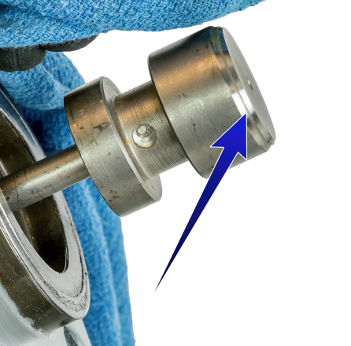

ch2 pass: lap line on the real plug; 62+63 Valve Lapping  The lap linea polished ring right around the plug's seating chamfer — lap until it is solid and even all the way round Fisher easy-e manuals — Lapping Metal Seats 62